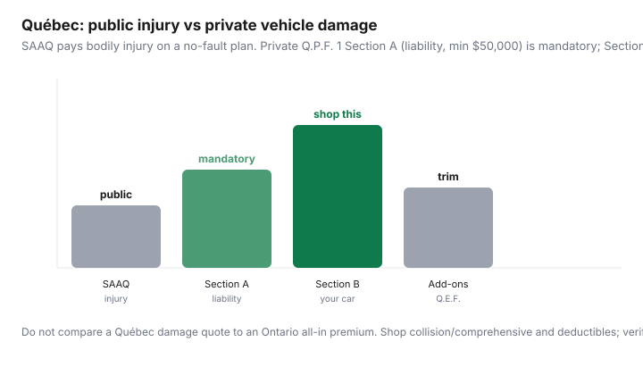

Transportation · Canada
How Québec drivers can shop private damage insurance without confusing it with SAAQ
Newcomers to Québec copy Ontario shopping advice and then cannot find “accident benefits” on a private quote. They are looking in the wrong building. SAAQ (the public automobile insurance plan) pays bodily injury on a no-fault basis. Private insurers sell the mandatory civil-liability policy (damage you cause to others’ property) and the optional coverage for your own vehicle — collision, comprehensive, specified perils. Shop the private damage policy. Do not try to “beat SAAQ” on a comparison site.
Educational only. AMF oversees private auto insurance; SAAQ runs the public injury plan. We are not a broker. See also how shopping works in private markets and telematics if a Québec insurer offers UBI on Section B.
Disclosure: Québec auto insurance quote tools are an offer type. Saving Optimizer may earn a commission if we later add partner links. We are not a damage-insurance broker or agent and we do not sell Q.P.F. 1 policies. Compare quotes with AMF-licensed intermediaries. Confirm rules at saaq.gouv.qc.ca and lautorite.qc.ca.
Key takeaways
- SAAQ: no-fault injury and death benefits for Québecers in a traffic accident (in Québec or abroad). It does not repair your car or pay property damage you cause.
- Private Q.P.F. No. 1: Section A civil liability is mandatory — at least $50,000 (higher minimums apply to some vehicle types). Section B (loss of or damage to your auto) is optional in law, usually required by a lender, and is what you shop.
- Compare deductibles, listed/endorsed drivers, winter storage, and Q.E.F. endorsements — not an Ontario all-in premium.
- AMF: brokers must be able to quote at least three insurers; agents represent one. Re-shop Section B every renewal. The same coverage can differ in price.
- SAAQ pages updated 16 Mar 2026; AMF auto pages noted updates into 2026. Verify before you decline comprehensive in a street-parked Plateau winter.
Public injury coverage vs private vehicle damage—plain English
SAAQ’s “plan in brief” (last update 16 Mar 2026 on the English page we reviewed): every Québecer is covered for injury or death from a traffic accident, regardless of fault, in Québec or anywhere in the world. Because it is no-fault, you generally cannot sue the other driver in Québec for those bodily-injury pieces. That is the public plan. It is not optional and you do not pick a “SAAQ deductible.”
What SAAQ does not do: pay to fix your bumper, replace a stolen Honda, or pay the fence you hit. For those, the Automobile Insurance Act requires vehicle owners to hold private civil liability of at least $50,000. AMF: Section A is compulsory; Section B is not compulsory in law but most owners buy it, and a loan or lease will insist. Some commercial or special vehicles have higher legal minimums (SAAQ lists $500,000 / $1 million / $2 million classes — if that is you, you already have a specialist, not this household guide).

What to compare when shopping collision/comprehensive
Section B protections (AMF / Q.P.F. 1 language):
- Collision or upset (Protection 2): your vehicle in a crash, including when you are at fault, minus the deductible.
- Comprehensive (Protection 3): theft, vandalism, fire, glass, falling objects, weather — not collision.
- All perils / specified perils: broader or narrower packages. Read which perils are in or out.
Line up quotes on the same protections, the same deductibles, the same drivers, and the same annual kilometres. A cheaper quote that silently dropped comprehensive is not a save if you street-park. Replacement insurance (Q.E.F. No. 5) sometimes appears at the dealer — it is a separate endorsement conversation, not “the insurance.” AMF reminds you that dealers may offer it under conditions; you can still shop.
Deductibles, endorsed drivers, and winter storage
| Lever | Why it moves the price | Watch-out |
|---|---|---|
| Collision deductible | Higher deductible, lower premium | You must pay it after an at-fault crash |
| Comprehensive deductible | Glass and theft claims | A $1,000 glass deductible on a windshield-heavy winter is a choice |
| Listed drivers | Who is allowed to drive | Do not hide a household licensee |
| Winter storage / seasonal | Parked, plates, reduced use | Ask before you assume “storage = free month” |
If the car sleeps from December to March, ask about suspending or reducing Section B the legal way — not by hoping nobody notices. Registration and SAAQ plate rules are a second office. Private insurers cannot waive a plate requirement. If you drive to Florida, tell the insurer; SAAQ injury cover travels, but your Section A/B territory wording may not without a note (SAAQ explicitly says notify the private insurer when you will drive outside Québec).
Discounts that still matter in Québec
Private Québec insurers still file discounts: multi-vehicle, home+auto bundle, licensed years, clean record, winter tires (amounts vary — not Ontario’s mandatory 2–5%), anti-theft, and sometimes telematics on the damage policy. Ask. Then requote without the ones that need a gadget you will hate. AMF’s consumer page is blunt: the same coverage can cost different amounts at different insurers. That sentence is the whole shopping hobby. Brokers shop several; agents shop one brand. Use two channels if you can.
How to avoid double-paying for unused add-ons
Q.E.F. endorsements append to the policy. Common clutter:
- Replacement cost you no longer need on a 9-year-old car.
- Rental / loss-of-use that duplicates a credit-card benefit you actually have (read the card, do not assume).
- Roadside that duplicates CAA or the manufacturer.
- Accident benefits riders that sound like Ontario AB — you already have SAAQ for injury. Ask what the rider adds before you pay for a second copy of the public plan.
If a quote is cheap because Section B is “specified perils only,” know what is out (often vandalism or glass). Cheap is allowed. Surprise is not.
Annual re-shop habit for damage coverage
- Six weeks before renewal, export last year’s Q.P.F. 1 declarations (drivers, km, deductibles, endorsements).
- Get at least two quotes on that exact sheet — one broker (three-insurer duty) and one direct/agent if you already like a brand.
- Ask each: winter-tire proof, storage, listed occasional drivers, any UBI.
- Pick coverage first, then price. Switch at renewal, not mid-term, unless a licensed person has a reason.
- Keep SAAQ and AMF bookmarks. When a friend “saved $400 in Toronto,” translate it before you copy the move.
Where to verify rules officially
- saaq.gouv.qc.ca — public plan in brief; what is not covered; driving outside Québec (notify the private insurer).
- lautorite.qc.ca — AMF auto insurance for the public: mandatory Section A, optional Section B, brokers vs agents, Q.E.F. endorsements.
- Your policy jacket (Q.P.F. 1) — the contract, not a blog.
- Registration and driver’s licence remain SAAQ products. Insurance certificates for the private policy still need to live in the car with the licence and registration.
Québec’s split system is simpler once you stop using Ontario words. SAAQ = injury. Private = liability + your sheet metal. Shop the sheet metal every year.
Sources & date stamps
- SAAQ, “Québec’s Public Automobile Insurance Plan in Brief,” English page last update 16 Mar 2026 — no-fault injury; not a substitute for private insurance; $50,000 civil-liability minimum for owners.
- SAAQ, accidents outside Québec — SAAQ pays your bodily injury, not property damage or injuries you cause to others.
- AMF, Automobile insurance (professionals and general public pages, updates noted into 2026) — SAAQ injury vs private damage; Q.P.F. 1 Sections A/B; $50,000 Section A minimum; brokers vs agents.
Frequently asked questions
Does SAAQ cover damage to my car?
No. SAAQ’s public plan compensates bodily injury and death on a no-fault basis. Damage to your vehicle is private Section B (collision/comprehensive), which is optional in law unless a lender requires it.
What private auto insurance is mandatory in Québec?
Civil liability (Q.P.F. 1 Section A) of at least $50,000 for a typical private passenger vehicle — more for some vehicle classes. It pays property damage (and certain liability) you cause to others, not SAAQ injury benefits.
Can I use an Ontario quote comparison in Québec?
Not as a number. Ontario private policies price injury benefits that SAAQ already covers. Compare Québec quotes to other Québec quotes on the same Section A/B sheet.
Should I buy collision on an old paid-off car?
Only if you cannot replace it in cash and you accept the deductible. AMF notes Section B is not legally required. A lender or lessor will usually require it anyway.
Where do I verify Québec auto insurance rules?
saaq.gouv.qc.ca for the public injury plan and lautorite.qc.ca (AMF) for private policies, brokers, and endorsements. This guide is education, not a policy.